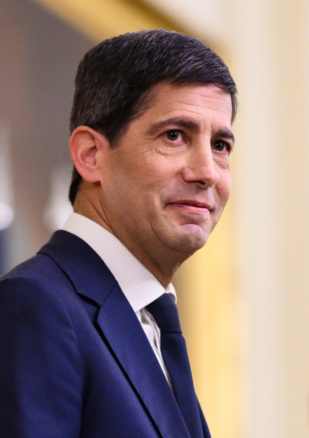
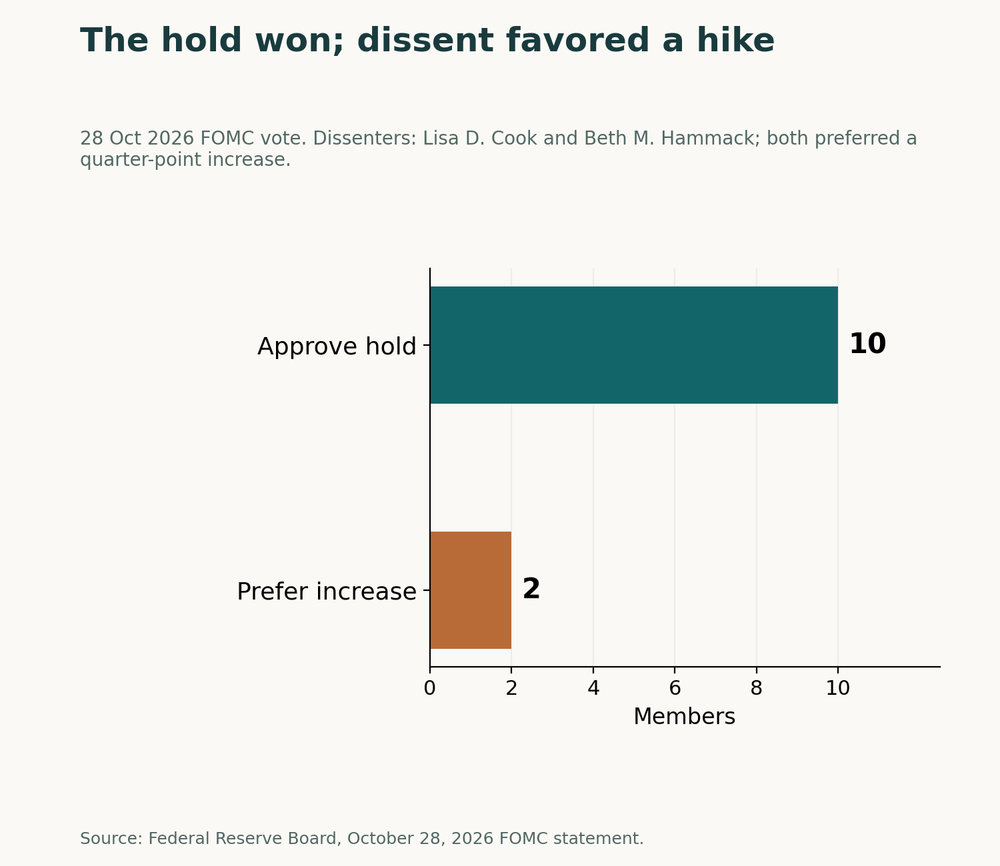
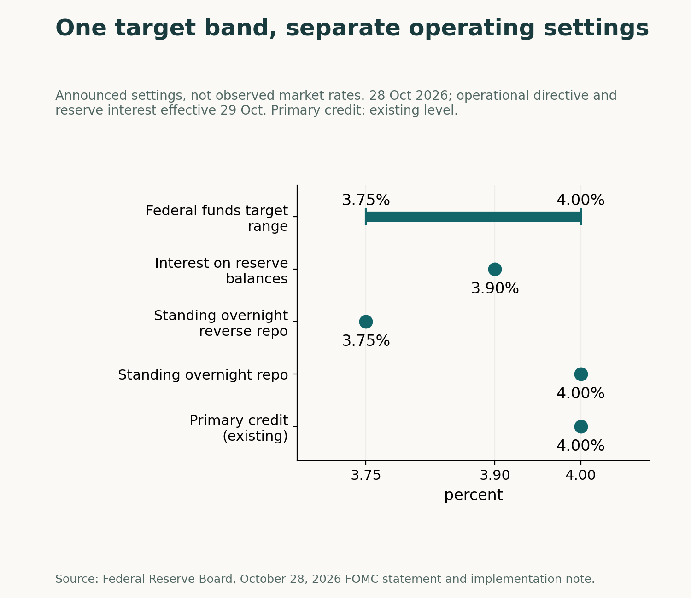

Retrospective analysis, written on 1 November 2026 (GMT+7).
An unchanged rate can still contain a pointed disagreement. On October 28, 2026, the Federal Reserve's policy committee voted 10-2 to keep the federal funds target range at 3.75 to 4 percent, according to its October 28 statement. Both dissenters wanted a quarter-percentage-point increase.
Capital Chronicle's reading is that the decision and its implementation answer different questions. The vote establishes the target range and the direction of disagreement. The companion note sets out the rates and instructions used to implement that stance. A reader needs both documents to distinguish the policy choice from its operating settings.
A hold with dissent in one direction
Lisa D. Cook and Beth M. Hammack voted against the action because they preferred to raise the target range by a quarter percentage point at that meeting. That makes the direction of dissent clear: they favored an increase, while the approved action maintained the range.
The statement described economic activity as expanding strongly, domestic spending as resilient and inflation as elevated. It also said accumulating more information would help the Committee determine the stance appropriate for a timely return to its 2 percent inflation goal. That is the Committee's published assessment; it should not be turned into a separate explanation attributed to either dissenter.
The strongest countercase to a looming-hike interpretation is the decision itself: ten members approved keeping the range unchanged. The two dissenters' preference is evidence of disagreement at this meeting, not a forecast of the next vote. Reading the split as a timetable for higher rates would give it a meaning the vote alone cannot establish.

One target range, several operating rates
The companion implementation note describes decisions to carry out the October 28 policy stance. The Board of Governors unanimously maintained interest paid on reserve balances at 3.90 percent, effective October 29. The directive to the New York Fed's trading desk, also effective October 29, instructed it to undertake operations as necessary to maintain the federal funds rate within the 3.75 to 4 percent target range.
The same directive set standing overnight repo operations at 4.0 percent and the standing overnight reverse repo offering rate at 3.75 percent. In a related action, the Board unanimously approved the primary credit rate at its existing 4.0 percent level. The note therefore assigns some identical numbers to different instruments; it does not combine those instruments into a single rate.
The 3.90 percent reserve-balances setting is not a substitute label for the 3.75 to 4 percent federal funds target range. One is an individual rate; the other is the interval the desk is instructed to maintain. Likewise, unanimous Board actions on reserve interest and primary credit should not be mistaken for unanimity in the 10-2 FOMC decision.
These are announced settings, not observations of the rates at which market transactions actually took place. The chart compares their stated levels and roles. It should not be read as a record of market repricing or as a measure of how effectively the instruments transmitted the decision.

What to watch in a later decision
The next useful question is whether a later Committee decision changes the target range or the direction of the recorded vote. The October 28 documents should be read as that meeting's decision and implementation instructions, rather than a prediction of what comes next.
Analysis, not financial advice. Readers decide whether to trade.
Analysis, not financial advice.